MARTÍN
MARTÍN PARTICIPÁ
PARTICIPÁ


ÚLTIMAS PELÍCULAS

GLADIADOR
Año: (2000)
Director: Ridley Scott.
Actores: Russell Crowe, Joaquin Phoenix, Connie Nielsen.
Sinopsis: Un general fugitivo se convierte en el gladiador más poderoso de Roma, y planea vengarse del emperador que lo traicionó.
Es una espectacular recreación histórica de la Roma Imperial, un film de aventuras épicas con grandes batallas y gestas heróicas que lejos de exagerar un perfil de inmortal, te absorben con crudeza en cada combate. Con ese toque de ambición política, de intriga y venganza que cobra vida gracias a un reparto tanto de protagonistas como de secundarios que bordan sus personajes al son de una banda sonora increiblemente acertada, obra del galardonado Zimmer.
MI PUNTUACIÓN:
OTRAS PUNTUACIONES:
IMDb:
Rotten Tomatoes:
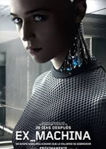
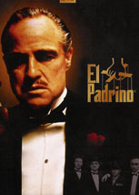
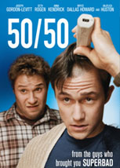


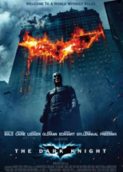
ÚLTIMAS SERIES
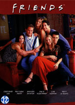
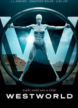
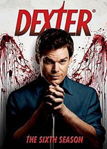
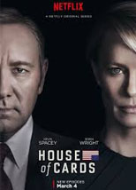
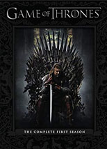
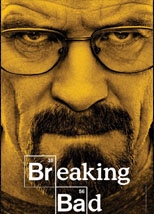
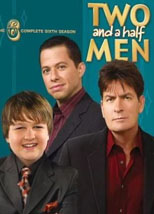